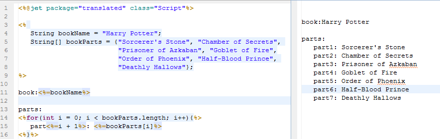
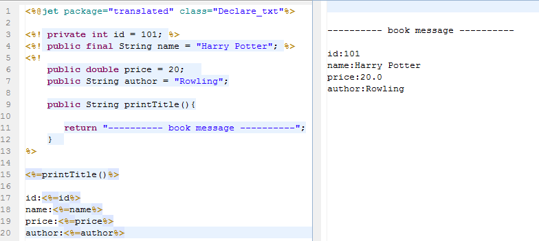
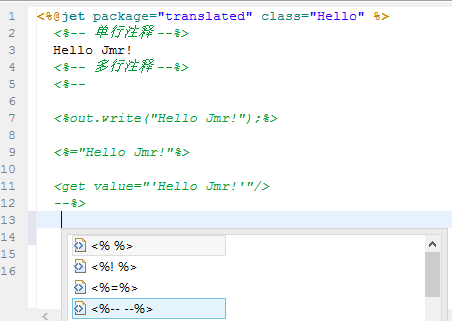

Esta sección presentará brevemente la sintaxis básica del desarrollo de Jet.
Script
Un programa de script puede contener cualquier cantidad de sentencias, variables, métodos o expresiones de Java, siempre que sean válidos en el lenguaje de script.
Igual que el <% %> de Jsp.
Formato de sintaxis del script:
<% 代码片段 %>
Expresión
Las expresiones de lenguaje de script incluidas en la expresión se convierten primero a String y luego se insertan donde aparece la expresión.
El elemento de expresión puede contener cualquier expresión que cumpla con la especificación del lenguaje Java, pero no se puede usar punto y coma para terminar la expresión.
Igual que el <%= %> de Jsp.
Formato de sintaxis de la expresión:
<%=表达式%>
Ejemplo de programa:

Declaración
Las sentencias de declaración pueden declarar una o más variables o métodos; equivalen a variables de clase y métodos de clase.
Igual que el <%! %> de Jsp.
Formato de sintaxis de la declaración:
<%! declaration; [ declaration; ]+ ... %>
Ejemplo de programa:

Comentario
El contenido de los bloques de comentarios se omitirá y no se utilizará para la generación. Se puede usar para comentarios de una sola línea o de varias líneas.
Formato de sintaxis del comentario:
<%-- 注释内容 --%>
